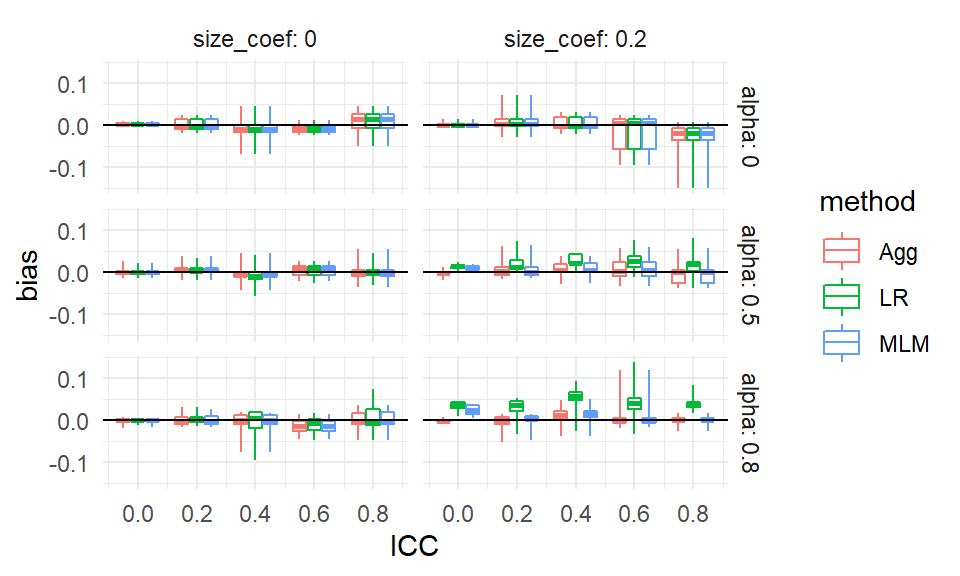
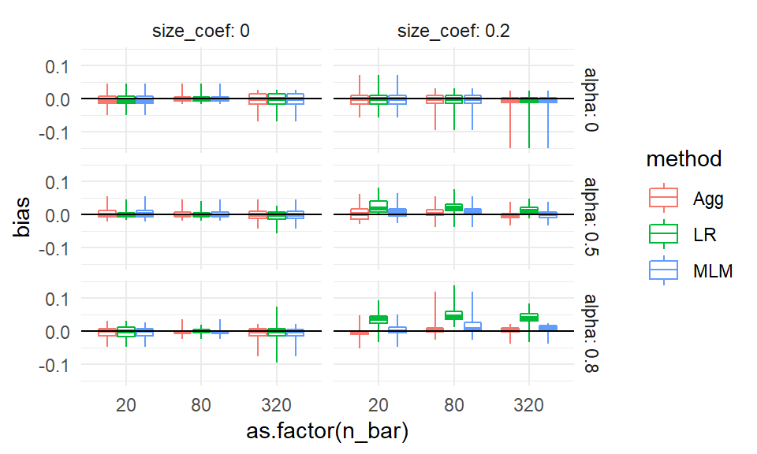
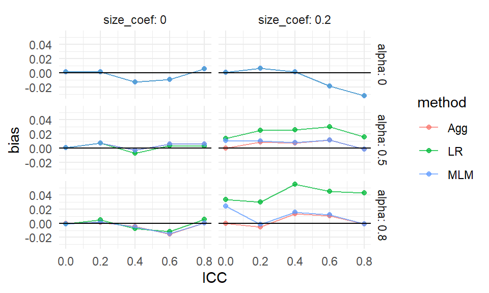

Chapter 11 Case study: A simulation with clustered data
Generating data with complex structure can be intimidating, but if you set out a recipe for how the data is generated it is often not to bad to build that recipe up with code. We will illustrate how to tackle this kind of data with a case study of best practices for analyzing data from a cluster-randomized RCT of students nested in schools.
A lot of the current literature on multisite trials is exploring how variation in the size of impacts across sites can cause bad things can happen. What does it mean for this particular context?
There are various ways of analyzing such data:
- Individual Level Analysis
- Multilevel modeling (MLM): Fit a multilevel model to account for dependencies within cluster.
- Linear regression (LR): Fit a linear model and use cluster robust standard errors.
- Aggregation
- Aggregation (Agg): Calculate average outcomes for each cluster and fit a linear model with heteroskedastic robust SEs
We might then ask, are any of these strategies biased? When and how much? Are any of these strategies more precise (have smaller SEs)? Are the standard errors for these different strategies valid? We might think aggregation should be worse since we are losing information, right? If so, how much is lost?
To make this investigation a bit more rich, we are also going to ask a final question that will influence our data generating process. We want to investigate what happens when the impact of a site depends on the site size. This is a common question that has gained some attention in the education world, where we might reasonably think sites of different sizes may respond to treatment differently. We want to know if our studied methods would end up giving us biased results, should there be such a relationship.
11.1 A design decision: What do we want to manipulate?
There are a lot of ways we might generate data. To figure out what kinds of controls we have on that process, we need to think about the goals of the simulation.
In our case, for example, we might think:
- We figure if all the sites are the same size, we are probably safe. But if sites vary, then we could have issues with our estimators.
- Also, if site size varies, but has nothing to do with impact, then we are probably good, at least for bias, but if it is associated then how we average our sites is going to matter.
Usually it is good practice to keep the simple option along with the complex one. We want to both check that something does not matter as well as verify it does.
Given this, we land on the following points:
- We need to consider both all-same-size sites and variable size sites.
- Our DGP probably should have some impact variation across sites.
- We should probably connect impact variation to site size to explore a more malicious context.
- For simplicity we will simply include a site size by treatment interaction term to get our heterogeneity.
11.2 A mathematical model for cluster-randomized data
The easiest way to write down a recipe for data generation is with a mathematical model. This is especially important for more complex DGPs, such as those for hierarchical data.
We know we want a collection of clusters with different sizes and different baseline mean outcomes. To keep things simple, we might want a common treatment shift within cluster: if we treat a cluster, everyone is raised by some specified amount.
We want to have some measure of site size. For starters, lets create a covariate which is the percent of the average site size that a site is: \[ S_j = \frac{n_j - \bar{n}}{ \bar{n} } \]
Using this coveriate, we could end up with this model to describe our data: \[ \begin{aligned} Y_{ij} &= \beta_{0j} + \epsilon_{ij} \\ \epsilon_{ij} &\sim N( 0, \sigma^2_\epsilon ) \\ \beta_{0j} &= \gamma_{0} + \gamma_{1} Z_j + \gamma_2 Z_j S_j + u_j \\ u_j &\sim N( 0, \sigma^2_u ) \end{aligned} \] Our parameters are the mean outcome of control unit (\(\gamma_0\)), the treatment Impact (\(\gamma_1\)), the amount of cross site variation (\(\sigma^2_u\)), and residual variation (\(\sigma^2_\epsilon\)). Our \(\gamma_2\) is our site-size by treatment interaction term: bigger sites will (assuming \(\gamma_2\) is positive) have larger treatment impacts.
If you prefer the reduced form, it would be:
\[ Y_{ij} = \gamma_{0} + \gamma_{1} Z_j + \gamma_2 Z_j S_j + u_j + \epsilon_{ij} \] We might also include a main effect for \(S_j\). This would make larger sites systematically different than smaller sites at baseline, rather than having it only be part of our treatment variation term. For simplicity we drop it here.
To generate data, we would also need several other quantities specified. First, we need to know the number of clusters (\(J\)), the sizes of the clusters (\(n_j\), for \(j = 1, \ldots, J\)). We have to provide a recipe for generating these sizes. We might try
\[ n_j \sim unif( (1-\alpha)\bar{n}, (1+\alpha)\bar{n} ) \] with a fixed \(\alpha\) to control the amount of variation in cluster size. If \(\bar{n} = 100\) and \(\alpha = 0.25\) then we would, for example, have sites ranging from 75 to 125 in size.
Given how we are generating site size, look again at our treatment impact heterogeneity term:
\[ \gamma_2 Z_j \left(\frac{n_j - \bar{n}}{\bar{n}}\right) \] Note how we are standardizing by average site size to make our covariate not change in terms of its importance as a function of site size, but rather as a function of \(\alpha\). In particular, \(\frac{n_j - \bar{n}}{\bar{n}}\) will range from \(-\alpha\) to \(\alpha\), regardless of average site size. Carefully setting up a DGP so the “knobs” we use are standardized like this can make interpreting the simulation results much easier. Consider if we did not divide by \(\bar{n}\): then larger sites would also have more severe heterogeniety in treatment impact; this could make interpreting the results very confusing.
We next need to define how we generate our treatment indicator, \(Z_j\). We might specify some proportion \(p\) assigned to treatment, and set \(Z_j = 1\) or \(Z_j = 0\) using a simple random sampling approach on our \(J\) units.
11.3 Multilevel data generation is a recipe using a statistical model
Now let’s translate our mathematical model to code. In the real world:
- We obtain data, we pick a model, we estimate parameters
- The data comes with covariates and outcomes
- It also comes with sample size, sizes of the clusters, etc.
In the simulation world, by comparison:
- We pick a model, we decide how much data, we generate covariates, we pick the parameters, and then we generate outcomes
- We need to decide how many clusters, how big the clusters are, etc.
- We have to specify how the covariates are made. This piece is very different from real-world analysis.
Step 1: Generate your sites
- Generate site-level covariates
- Generate sample size within each site
- Generate site level random effects
Step 2: Generate your students inside the sites
- Generate student covariates
- Generate student residuals
- Add everything up to generate student outcomes
The mathematical model gives us exactly the details we need to execute on these steps. In particular, we can translate the math directly to R code, and then finally put it all in a function.
In general, we have several components to our model:
COVARIATES and STRUCTURAL COVARIATES Covariates are the things that we are usually given when analyzing real data. This is a broad definition, including things beside baseline information:
- Conventional: student demographics, school-level characteristics, treatment assignment
- Structural: number of observations in each school, proportion treated in each school
We don’t often think of these things as “covariates” but in a simulation we have to get them from somewhere.
MODEL This is the parametric relationship between everything: how the outcomes are linked to the covariates. This includes specification of any additional randomness (residuals, etc.)
DESIGN PARAMETERS These are, e.g., the number of sites or variation in site size. These control how we generate the structural covariates. In the real world, we don’t tend to think of these things are covariates per se, they are more just consequences of the data. We rarely model them, but instead coniditon on them, in a statistical analysis.
PARAMETERS These are the specifics: for a given model, parameters describe degree of variability, what the slope is, and so forth. We usually estimate these FROM data. Critically, if we know them, we can GENERATE NEW DATA.
11.3.1 Generating the multisite data
We know we will need to generate and then analyze data. First lets focus on the “generate” piece. Borrowing from our DGP skeleton, we specify a function with all the parameters we might want to pass it, including defaults for each (see @(#default_arguments) for more on function defaults):
gen_dat_model <- function( n_bar = 10,
J = 30,
p = 0.5,
gamma_0 = 0, gamma_1 = 0, gamma_2 = 0,
sigma2_u = 0, sigma2_e = 1,
alpha = 0 ) {
# Code (see below) goes here.
}Note our parameters are a mix of model parameters (gamma_0, gamma_1, sigma2_e, etc., representing coefficients in regressions, variance terms, etc.) and design parameters (n_bar, J, p) that directly inform data generation. We set default arguments (e.g., gamma_0=0) so we can ignore aspects of your DGP that we don’t care about later on.
Make the sites. We make the sites first:
# generate site sizes
n_min = round( n_bar * (1 - alpha) )
n_max = round( n_bar * (1 + alpha) )
nj <- sample( n_min:n_max, J, replace=TRUE )
# Generate average control outcome and average ATE for all sites
# (The random effects)
u0j = rnorm( J, mean=0, sd=sqrt( sigma2_u ) )
# randomize units within each site (proportion p to treatment)
Zj = ifelse( sample( 1:J ) <= J * p, 1, 0)
# Calculate site intercept for each site
beta_0j = gamma_0 + gamma_1 * Zj + gamma_2 * Zj * (nj-n_bar)/n_bar + u0jNote the line with sample(1:J) <= J*p; this is a simple trick to generate treatment and control.
There is also a serious error in the above code; we leave it as an exercise (see below) to find and fix it.
Make the individuals. Then the individuals
# Make individual site membership
sid = as.factor( rep( 1:J, nj ) )
dd = data.frame( sid = sid )
# Make individual level tx variables
dd$Z = Zj[ dd$sid ]
# Generate the residuals
N = sum( nj )
e = rnorm( N, mean=0, sd=sqrt( sigma2_e ) )
# Bundle and send out
dd <- mutate( dd,
sid=as.factor(sid),
Yobs = beta_0j[sid] + e,
Z = Zj[ sid ] )The rep command will repeat each number, 1, 2… J, the corresponding number of times as listed in nj.
We wrap it all in a function, and when we call it we get:
dat <- gen_dat_model( n=5, J=3, p=0.5,
gamma_0=0, gamma_1=0.2, gamma_2=0.2,
sigma2_u = 0.4, sigma2_e = 1,
alpha = 0.5 )
dat## sid Z Yobs
## 1 1 0 1.3752789
## 2 1 0 0.5802912
## 3 1 0 1.2390264
## 4 1 0 -0.3707643
## 5 1 0 0.3861877
## 6 2 0 1.7129609
## 7 2 0 -0.2930146
## 8 2 0 2.3357674
## 9 2 0 0.9447586
## 10 2 0 3.4317594
## 11 3 1 -1.5382230
## 12 3 1 -2.3565531
## 13 3 1 0.934756511.4 Analyzing our data
To analyze our data, we use two libraries, the lme4 package (for multilevel modeling), the arm package (which gives us nice access to standard errors, with se.fixef()), and lmerTest (which gives us \(p\)-values for multilevel modeling).
We also need the estimatr package to get robust SEs with lm_robust.
library( lme4 )
library( arm )
library( lmerTest )
library( estimatr )We have three analysis functions, which we can put in three different methods:
Multilevel Regression (MLM):
analysis_MLM <- function( dat ) {
M1 = lmer( Yobs ~ 1 + Z + (1|sid),
data=dat )
est = fixef( M1 )[["Z"]]
se = se.fixef( M1 )[["Z"]]
pv = summary(M1)$coefficients["Z",5]
tibble( ATE_hat = est, SE_hat = se, p_value = pv )
}Linear Regression with Cluster-Robust Standard Errors (LM):
analysis_OLS <- function( dat ) {
M2 <- lm_robust( Yobs ~ 1 + Z,
data=dat, clusters=sid )
est <- M2$coefficients[["Z"]]
se <- M2$std.error[["Z"]]
pv <- M2$p.value[["Z"]]
tibble( ATE_hat = est, SE_hat = se, p_value = pv )
}Aggregate data (Agg):
analysis_agg <- function( dat ) {
datagg <-
dat %>%
group_by( sid, Z ) %>%
summarise(
Ybar = mean( Yobs ),
n = n()
)
stopifnot( nrow( datagg ) == length(unique(dat$sid) ) )
M3 <- lm_robust( Ybar ~ 1 + Z,
data=datagg, se_type = "HC2" )
est <- M3$coefficients[["Z"]]
se <- M3$std.error[["Z"]]
pv <- M3$p.value[["Z"]]
tibble( ATE_hat = est, SE_hat = se, p_value = pv )
}And then a single function that puts all these together:
analyze_data = function( dat ) {
MLM = analysis_MLM( dat )
LR = analysis_OLS( dat )
Agg = analysis_agg( dat )
bind_rows( MLM = MLM, LR = LR, Agg = Agg,
.id = "method" )
}When we pass a dataset to it, we get a nice table of results that we can evaluate:
analyze_data( dat )## # A tibble: 3 × 4
## method ATE_hat SE_hat p_value
## <chr> <dbl> <dbl> <dbl>
## 1 MLM -2.12 0.968 0.186
## 2 LR -2.12 0.492 0.145
## 3 Agg -2.12 0.492 0.145Each method for analysis is a single line. We record estimated impact, estimated standard error, and a nominal p-value.
Note how the bind_rows() method can take naming on the fly, and give us a column of method, which will be very useful to keep track of what estimated what.
We intentionally wrap up our results with a data frame to make later processing of data with the tidyverse package much easier.
11.5 The simulation
So we have our two steps, and the next step of our simulation is to rerun them both a bunch of times. Always start with a single scenario to figure out if your code is working and if your intuition is working.
ATE <- 0.30
R <- 1000
one_run <- function( ATE ) {
dat <- gen_dat_model( n_bar = 200, J=30,
gamma_1 = ATE, gamma_2 = 0.5,
sigma2_u = 0.20, sigma2_e = 0.80,
alpha = 0.75 )
analyze_data(dat)
}
tictoc::tic() # Start the clock!
set.seed( 40404 )
runs <-
purrr::rerun( R, one_run( ATE ) ) %>%
bind_rows( .id="runID" )
tictoc::toc()## 365.94 sec elapsedWe have the individual results of all our methods applied to each generated dataset.
11.6 Analysis of our single scenario
For our single scenario, we can now evaluate how well the estimators did. In particular we have these primary questions:
- Is it biased? (bias)
- Is it precise? (standard error)
- Does it predict well? (RMSE)
- Can we estimate uncertainty well? (i.e., are our estimated SEs about right?)
We systematically go through answering these questions for our initial scenario.
11.6.1 Are the estimators biased?
Bias is with respect to a target estimand. Here we assess whether our estimates are systematically different from the parameter we used to generate the data (this is the ATE parameter). We also calculate the MCSE for the bias using a simple sampling formula.
runs %>%
group_by( method ) %>%
summarise(
mean_ATE_hat = mean( ATE_hat ),
bias = mean( ATE_hat - ATE ),
SE_bias = sd( ATE_hat - ATE ) / sqrt(R)
)## # A tibble: 3 × 4
## method mean_ATE_hat bias SE_bias
## <chr> <dbl> <dbl> <dbl>
## 1 Agg 0.306 0.00561 0.00531
## 2 LR 0.390 0.0899 0.00580
## 3 MLM 0.308 0.00788 0.00531Linear regression is biased. There is no evidence of bias for Agg or MLM. This is because the linear regression is targeting the person-average average treatment effect. Our data generating process makes larger sites have larger effects, so the person average is going to be higher since those larger sites will count more. The Agg and MLM methods, by contrast, estimate the site-average effect; this is in line with our DGP.
11.6.2 Which method has the smallest standard error?
The true Standard Error is simply how variable the point estimates are, i.e., the standard deviation of the point estimates for a given estimator. The standard error is a measure of how stable our estimates are across datasets that all came from the same data generating process. We calculate the standard error, and also the relative standard error using linear regression as a baseline:
true_SE <- runs %>%
group_by( method ) %>%
summarise(
SE = sd( ATE_hat )
)
true_SE %>%
mutate( per_SE = SE / SE[method=="LR"] )## # A tibble: 3 × 3
## method SE per_SE
## <chr> <dbl> <dbl>
## 1 Agg 0.168 0.916
## 2 LR 0.183 1
## 3 MLM 0.168 0.916The other methods appear to have SEs about 8% smaller than Linear Regression
11.6.3 Which method has the smallest Root Mean Squared Error?
So far linear regression is not doing well: it has bias and it also has a larger standard error than the other two. We can assess overall performance by combining these two quantities with the RMSE:
runs %>%
group_by( method ) %>%
summarise(
RMSE = sqrt( mean( (ATE_hat - ATE)^2 ) )
)## # A tibble: 3 × 2
## method RMSE
## <chr> <dbl>
## 1 Agg 0.168
## 2 LR 0.204
## 3 MLM 0.168RMSE is a way of taking both bias and variance into account, all at once. Here, LR’s bias plus increased variability is giving it a higher RMSE. For Agg and MLM, the RMSE is basically the standard error; this makes sense as they are not biased. For LR we see a slight bump to the RMSE, but clearly the standard error dominates the bias term. This is especially the case as RMSE is the square root of the bias and standard errors squared; this makes difference between them even more extreme.
11.6.4 Do the methods have correctly estimated standard errors?
To assess this, we can look at the average estimated (squared) standard error and compare it to the true standard error. Our standard errors are inflated if they are systematically larger than they should be, across the simulation runs. We can also look at how stable our standard error estimates are, by taking the standard deviation of our standard error estimates.
runs %>% group_by( method ) %>%
summarise(
SE = sd( ATE_hat ),
mean_SE_hat = sqrt( mean( SE_hat^2 ) ),
infl = 100 * mean_SE_hat / SE,
sd_SE_hat = sd( SE_hat ),
stability = 100 * sd_SE_hat / SE )## # A tibble: 3 × 6
## method SE mean_SE_hat infl sd_SE_hat stability
## <chr> <dbl> <dbl> <dbl> <dbl> <dbl>
## 1 Agg 0.168 0.174 104. 0.0232 13.8
## 2 LR 0.183 0.185 101. 0.0309 16.8
## 3 MLM 0.168 0.174 104. 0.0232 13.8All of the SEs appear to be a bit conservative on average. (3 or 4 percentage points too big).
The stability of the SE-hats is also of interest. The last column shows how variable the standard error estimates are relative to the true standard error. 50% would mean the standard error estimates can easily be off by 50% of the truth, which is not particularly good.
11.6.5 Did we have enough simulation trials?
Finally, we can check our MCSEs for our performance measures to see if we have enough runs to believe these differences:
library( simhelpers )
runs$ATE = ATE
runs %>% group_by(method) %>%
group_modify(
~ calc_absolute( ., estimates = ATE_hat, true_param = ATE,
perfm_criteria = c("bias","rmse")) )## # A tibble: 3 × 6
## # Groups: method [3]
## method K bias bias_mcse rmse rmse_mcse
## <chr> <int> <dbl> <dbl> <dbl> <dbl>
## 1 Agg 1000 0.00561 0.00531 0.168 0.00461
## 2 LR 1000 0.0899 0.00580 0.204 0.00520
## 3 MLM 1000 0.00788 0.00531 0.168 0.00461We see the MCSEs are small relative to the linear regression bias term and the RMSEs: we simulated enough runs to see these gross trneds.
11.7 Extending to a multifactor simulation
So far, our case study illustrates how multisite simulation (or any simulation) can be constructed by using a model as a recipe for data generation. We have also reinforced our basic message that making functions to wrap parts of simulation substantially eases code construction. But we only investigated a single scenario. How do our findings generalize? When are the different methods differently appropriate? To answer this, we need to extend to a multifactor simulation to systematically explore trends across contexts for our three estimators. We begin by identifying some questions we might have given our preliminary results.
Regarding bias, in our initial simulation, we noticed that Linear Regression is estimating a person-weighted quantity, and so would be considered biased for the site-average ATE. We might next ask, how much does bias change if we change the site-size by impact relationship?
For precision, we also saw that Linear Regression has a higher standard error. But is this a general finding? When does this occur? Are there contexts where linear regression will do better than the others? Originally we thought aggregation would lose information becuase little sites will have the same weight as big sites, but be more imprecisely estimated. Were we wrong? Or perhaps if site size was even more variable, Agg might do worse and worse.
Finally, the estimated SEs all appeared to be good, although they were rather variable, relative to the true SE. We might then ask, is this always the case? Will the estimated SEs fall apart (e.g., be way too large or way too small, in general) in different contexts?
To answer these questions we need to more systematically explore the space of models. But we have a lot of knobs to turn. In our simulation, we can generate fake cluster randomized data with the following features:
The treatment impact of the site can vary, and vary with the site size
We can have sites of different sizes if we want
We can also vary:
- the site intercept variance
- the residual variance,
- the treatment impact
- the site size
- the number of sites, …
We cannot easily vary all of these. We instead reflect on our research questions, speculate as to what is likely to matter, and then consider varying the following:
- Average site size: Does the number of students/site matter?
- Number of sites: Do cluster-robust SEs work with fewer sites?
- Variation in site size: Varying site sizes cause bias or break things?
- Correlation of site size and site impact: Will correlation cause bias?
- Cross site variation: Does the amount of site variation matter?
Even so, we have a problem: How do we index cross site variation? If we simply add more cross site variation, our total variation will increase. If methods deteriorate, we then have a confound: is it the cross site variation causing the problem, or is it the total variation? We therefore want to vary site variation while controlling total variation.
In extending our simulation we will also come across all sorts of concerns such as how to handle convergence issues in the modeling. We also need to think about how to deal with nuisance factors and how to summarize complex simulations. Finally, how do we choose appropriate factors and not become beholden to the parameters in our model?
11.8 Standardization in a data generating process
Given our model, we can generate data by specifying our parameters and variables of \(\gamma_{0}, \gamma_{1}, \gamma_{2}, \sigma^2_\epsilon, \sigma^2_u, \bar{n}, \alpha, J, p\).
Now, as discussed above, we want to manipulate within vs. between variation. If we just add more between variation (increase \(\sigma^2_u\)), our overall variation of \(Y\) will increase. This will make it hard to think about, e.g., power, since we have confounded within vs. between variation with overall variation (which is itself bad for power). It also impacts interpretation of coefficients. A treatment effect of 0.2 on our outcome scale is “smaller” if there is more overall variation.
To handle this we first (1) Standardize our data and then (2) reparameterize, so we have human-selected parameters that we can interpret that we then translate to our list of data generation parameters. This allows us to, for exmaple, operate in standard quantities such as effect size units. It also allows us ot index our DGP with more interpretable parameters such as the Intra-Class Correlation (ICC).
Our model is \[ Y_{ij} = \gamma_{0} + \gamma_{1} Z_j + \gamma_2 Z_j \left(\frac{n_j - \bar{n}}{\bar{n}} \right) + u_j + \epsilon_{ij} \]
The variance of our control-side outcomes is \[ \begin{aligned} var( Y_{ij}(0) ) &= var( \beta_{0j} + \epsilon_{ij} ) \\ &= var( \gamma_{0} + \gamma_{1} Z_j + \gamma_{2}Z_j \tilde{n}_j + u_j + \epsilon_{ij} ) \\ &= \sigma^2_u + \sigma^2_\epsilon \end{aligned} \] The effect size of an impact is defined as the impact over the control-side standard deviation. (Sometimes people use the pooled standard deviation, but this is usually a bad choice if one suspects treatment variation. More treatment variation should not reduce the effect size for the same absolute average impact.)
\[ ES = \frac{\gamma_1}{SD( Y | Z_j = 0 )} = \frac{\gamma_1}{\sqrt{ \sigma^2_u + \sigma^2_\epsilon } } \]
The way we think about how “big” \(\gamma_1\) is depends on how much site variation and residual variation there is. But it is also easier to detect effects when the residual variation is small. Effect sizes “standardize out” these sorts of tensions. We can use that.
In particular, we will use the Intraclass Correlation Coeffiicent (ICC), defined as \[ ICC = \frac{ \sigma^2_u }{ \sigma^2_\epsilon + \sigma^2_u } . \] The ICC is a measure of within vs. between variation.
What we then do is first standardized our data, meaning we ensure the control side variance equals 1. Using the above, this means \(\sigma^2_u + \sigma^2_\epsilon = 1\). It also gives us \(ICC = \sigma^2_u\), and \(\sigma^2_\epsilon = 1 - ICC\).
Our two model parameters are now tied together by our single ICC tuning parameter. The core idea is we can now manipulate the aspects of the DGP we want while holding other aspects of the DGP constant. Given our standardized scale, we have dropped a parameter from our set we might want to vary, and ensured varying the other parameter (now the ICC) is varying only one aspect of the DGP, not both. Before, increasing \(\sigma^2_u\) had two consequences: total variation and relative amount of variation at the school level. Manipulating ICC only does the latter.
Our revised code is then, at the simulation driver level:
run_CRT_sim <- function(reps,
n_bar = 10, J = 30, p = 0.5,
ATE = 0, ICC = 0.4,
size_coef = 0, alpha = 0,
seed = NULL, aggregate = TRUE) {
stopifnot( ICC >= 0 && ICC < 1 )
scat( "Running n=%d, J=%d, ICC=%.2f, ATE=%.2f (%d replicates)\n", n_bar, J, ICC, ATE, reps)
if (!is.null(seed)) set.seed(seed)
res <-
purrr::rerun( reps, {
dat <- gen_dat_model( n_bar = n_bar, J = J, p = p,
gamma_0 = 0, gamma_1 = ATE, gamma_2 = size_coef,
sigma2_u = ICC, sigma2_e = 1 - ICC,
alpha = alpha )
analyze_data(dat)
}) %>%
bind_rows( .id="runID" )
}Note the stopifnot: it is wise to ensure our parameter transforms are all reasonable, so we don’t get unexplained errors or strange results.
Also note how we are transforming our ICC parameter into specific other parameters to maintain our effect size interpretation of our
simulation.
We don’t need to modify the gen_dat_model method: we are just specifying the constellation of parameters as a function of the parameters we want to directly control in the simulation.
11.9 Making analyze_data() quiet
If we run our simulation when there is little cluster variation, we start getting a lot of warnings from our MLM estimator:
When we scale up to our full simulations, these warnings can become a nuisance.
Furthermore, the lmer command can sometimes just fails (we believe there is some bug in the optimizer that fails if things are just perfectly wrong).
If this was on simulation run 944 out of 1000, we would lose everything!
To protect ourselves, we trap messages and warnings as so (see Chapter @(#safe_code) for more on this):
quiet_lmer = quietly( lmer )
analyze_data <- function( dat ) {
# MLM
dat <- dat
M1 <- quiet_lmer( Yobs ~ 1 + Z + (1|sid), data=dat )
message1 = ifelse( length( M1$message ) > 0, 1, 0 )
warning1 = ifelse( length( M1$warning ) > 0, 1, 0 )
...
# Compile our results
tibble(
method = c( "MLM", "LR", "Agg" ),
ATE_hat = c( est1, est2, est3 ),
SE_hat = c( se1, se2, se3 ),
p_value = c( pv1, pv2, pv3 ),
message = c( message1, 0, 0 ),
warning = c( warning1, 0, 0 )
)We now get a note about the message regarding convergence saved in our results:
analyze_data(dat)## # A tibble: 3 × 4
## method ATE_hat SE_hat p_value
## <chr> <dbl> <dbl> <dbl>
## 1 MLM -2.12 0.968 0.186
## 2 LR -2.12 0.492 0.145
## 3 Agg -2.12 0.492 0.14511.10 Where to compute performance measures: inside vs. outside?
INSIDE (aggregate as you simulate): For each scenario we get a tidy result of our performance measures Less data to store, easier to compartmentalize No ability to add new performance measures on the fly
OUTSIDE (keep all simulation runs): You can dynamically add or change how you calculate performance measures End up with massive amounts of data to store and manipulate
11.11 Run the simulation
Running our simulation is the exact same code as we have used before. Simulations take awhile to run so we save them so we can analyze at our leisure. Here we are storing the individual runs, not the analyzed results!
params <-
cross_df(design_factors) %>%
mutate(
reps = 100,
seed = 20200320 + 1:n()
)
params$res = pmap(params, .f = one_CRT_sim )
res = params %>% unnest( cols=c(data) )
saveRDS( res, file = "results/simulation_CRT.rds" )11.12 Analyzing our results
Now that we have run our simulation, we turn to our questions listed above, extending our initial findings from our initial scenario to assess trends across our simulation factors.
11.12.1 Checking on convergence issues
First, we explore how often we get a convergence message:
res <- readRDS( "results/simulation_CRT.rds" )
res %>%
group_by( method, ICC ) %>%
summarise( message = mean( message ) ) %>%
pivot_wider( names_from = "method", values_from="message" )## # A tibble: 5 × 4
## ICC Agg LR MLM
## <dbl> <dbl> <dbl> <dbl>
## 1 0 0 0 0.499
## 2 0.2 0 0 0.0139
## 3 0.4 0 0 0.00311
## 4 0.6 0 0 0.00104
## 5 0.8 0 0 0.000444We see that when the ICC is 0 we get a lot of convergence issues, but as soon as we pull away from 0 it drops off considerably. At this point we might decide to drop those runs with a message or keep them. In this case, we decide to keep (it shouldn’t matter much in any case except the ICC = 0 case). We might eventually want to do a separate analysis of the ICC = 0 context to see if the MLM approach actually falls apart, or if it is just throwing error messages.
11.12.2 Calculating standard metrics
Once we have our individual runs for our difference scenarios, we group and calculate our performance metrics for each group.
sres <-
res %>%
group_by( n_bar, J, ATE, size_coef, ICC, alpha, method ) %>%
summarise(
bias = mean(ATE_hat - ATE),
SE = sd( ATE_hat ),
RMSE = sqrt( mean( (ATE_hat - ATE )^2 ) ),
ESE_hat = sqrt( mean( SE_hat^2 ) ),
SD_SE_hat = sqrt( sd( SE_hat^2 ) ),
power = mean( p_value <= 0.05 ),
R = n(),
.groups = "drop"
)11.12.3 Bias analysis
As a first step to understanding bias, we might bundle our results by ICC. In this code we are making groups of method by ICC level so we get side-by-side boxplots for each ICC level considered:
ggplot( sres, aes( ICC, bias, col=method, group=paste0(ICC,method) ) ) +
facet_grid( alpha ~ size_coef, labeller = label_both ) +
geom_boxplot(coef = Inf) +
geom_hline( yintercept = 0 ) +
theme_minimal() +
scale_x_continuous( breaks = unique( sres$ICC) )
Each box is a collection of simulation trials. E.g., for ICC = 0.6, size_coef = 0.2, and alpha = 0.8 we have 9 scenarios representing the varying level 1 and level 2 sample sizes:
filter( sres, ICC == 0.6, size_coef == 0.2,
alpha == 0.8, method=="Agg" ) %>%
dplyr::select( n_bar:alpha, bias )## # A tibble: 9 × 7
## n_bar J ATE size_coef ICC alpha bias
## <dbl> <dbl> <dbl> <dbl> <dbl> <dbl> <dbl>
## 1 20 5 0.2 0.2 0.6 0.8 -0.00452
## 2 20 20 0.2 0.2 0.6 0.8 -0.0182
## 3 20 80 0.2 0.2 0.6 0.8 -0.00921
## 4 80 5 0.2 0.2 0.6 0.8 0.119
## 5 80 20 0.2 0.2 0.6 0.8 0.00210
## 6 80 80 0.2 0.2 0.6 0.8 0.00641
## 7 320 5 0.2 0.2 0.6 0.8 -0.00182
## 8 320 20 0.2 0.2 0.6 0.8 -0.00219
## 9 320 80 0.2 0.2 0.6 0.8 0.00632We are seeing a few outliers for some of the boxplots, suggesting that there are other factors driving bias. We could try bundling along different aspects to see:
ggplot( sres, aes( as.factor(n_bar), bias, col=method, group=paste0(n_bar,method) ) ) +
facet_grid( alpha ~ size_coef, labeller = label_both ) +
geom_boxplot(coef = Inf) +
geom_hline( yintercept = 0 ) +
theme_minimal()
No progress there. Perhaps it is instability or MCSE.
The boxplots are hard for seeing trends. Instead of bundling, we can therefore aggregate:
ssres <-
sres %>%
group_by( ICC, method, alpha, size_coef ) %>%
summarise( bias = mean( bias ) )
ggplot( ssres, aes( ICC, bias, col=method ) ) +
facet_grid( alpha ~ size_coef, labeller = label_both ) +
geom_point( alpha=0.75 ) +
geom_line( alpha=0.75 ) +
geom_hline( yintercept = 0 ) +
theme_minimal()
This shows that site variation leads to greater bias, but only if the coefficient for size is nonzero. We also see that all the estimators must be the same if site variation is 0, with the overplotted lines on the top row of the figure.
11.13 Exercises
What is the variance of the outcomes generated by our model if there is no treatment effect? (Try simulating data to check!) What other quick checks can you make on your DGP to make sure it is working?
In gen_dat_model we have the following line of code to generate the number of individuals per site.
nj <- sample( n_min:n_max, J,
replace=TRUE )This code has an error. Generate a variety of datasets where you vary n_min, n_max and J to discover the error. Then repair the code.
Checking your data generating process across a range of scenarios is extremely important.
Extend the data generating process to include individual level covariates?
As foreground to the following chapters, can you explore multiple scenarios to see if the trends are common? First write a function that takes a set of parameters and runs the entire simulation and returns the results as a small dataframe. Then use code like this to make a graph of some result measure as a function of a varying parameter (you pick which parameter you wish to vary):
vals = seq( start, stop, length.out = 5 )
res = map_df( vals, my_simulation_function,
par1 = val1, par2 = val2, etc )